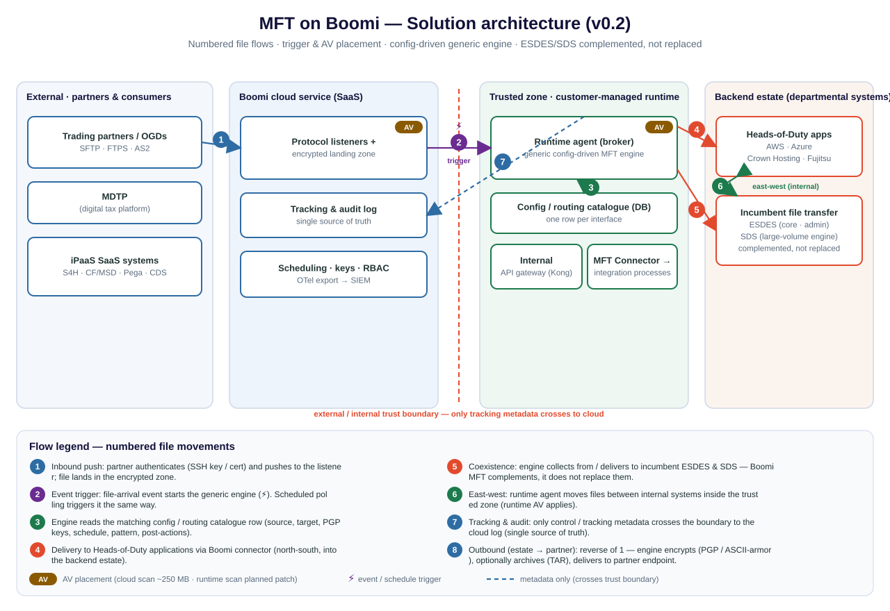

{kind=link}
{kind=link}
How to use this page
- Download bar (top of page). The buttons pull the Word SDD, the architecture figure (editable draw.io plus SVG/PNG), the capability & gap catalogue, and a zip of every deliverable. The bar stays pinned as you scroll.
- This page is the readable copy. It reproduces the review response, the corrected architecture and the key content so it can be referenced without opening the Word file. The Word SDD is the governance artefact for sign-off.
- Read order for a reviewer: the change log (what was addressed) → the architecture figure and numbered flows → the configuration promotion strategy → the open decisions needing named owners.
- The figure below is the SVG render. The editable source is the draw.io download; SVG/PNG are the renders embedded in documents.
What changed in v0.2 — review response
This version answers each comment from the 30 July review. The table maps every comment to the change made and where it lands, so the review can be checked rather than re-argued.
| Review comment | Change made | Where |
|---|---|---|
| Core file-transfer platform is ESDES, not WebMethods; focus solely on ESDES and do not undermine it. | Incumbent estate rewritten around ESDES (core, administered, secure/robust/auditable) and SDS (large-volume engine). WebMethods removed from the file-transfer narrative. | §5, §10 |
| Boomi MFT complements, does not immediately replace, SDS and ESDES. | Positioning restated as complement; no assumption of replacement; any migration is a separate, evidence-led decision. | §3, §5, §10 |
| State the real drivers: end-to-end visibility, large-file support, low-code. | Drivers rewritten to those three, plus consolidated governance. | §5.1 |
| "Configure over development" is low-code, reusable configuration, not custom coding. | Principle restated in those terms and carried through the design. | §3, §8.2 |
| Show runtime agents as brokers, and external + internal (east-west) movement. | Added to capabilities, the figure and the flow table; new FR-10 for east-west. | §7.1, §8 |
| Show AV placement; note the current limit and the planned runtime AV scanning patch. | AV placement marked on the figure; §7.2 records the ~250 MB cloud limit and the planned runtime-AV patch; new gap G-11. | §7.2, §8 |
| Clearer diagrams: numbered flows, triggers and AV placement. | Figure re-cut with numbered flows 1–8, trigger markers and AV badges, plus a numbered flow-step table. | §8 |
| Drop "control plane" / "data plane" terminology. | Replaced with plain MFT terms: Boomi cloud service, trigger & status path, file-transfer path. | throughout |
| Rename "register" to "catalogue". | Config/routing catalogue and capability & gap catalogue adopted; file renamed; cell-content alignment logged as an action. | §8.2, §11 |
| Use "API gateway", not "CAM gateway". | All CAM references replaced with API gateway (Kong). | §8 |
| Add a dedicated code-promotion strategy section. | New section: how configuration is stored, versioned in Git and promoted dev→test→prod through approval workflows. | §9 |
| Qualify inconsistent security claims. | Vendor claims (zero-trust, SOC 2) marked vendor-stated and to validate. | §7.2 |
| Peer review before senior review; collaborate with Jatin, Patrick, Shijit, Sridhar. | Peer-review step and named collaborators added to document control; revised version due Tue 4 Aug. | §1 |
Corrected architecture

Figure 1 — MFT on Boomi: numbered flows, trigger and AV placement, config-driven generic engine, incumbents complemented not replaced. Editable source: draw.io.
Numbered file flows
| # | Flow |
|---|---|
| 1 | Inbound push: partner authenticates (SSH key / certificate) and pushes to the listener; the file lands in the encrypted landing zone. |
| 2 | Event trigger: a file-arrival event starts the generic engine. Scheduled polling triggers it the same way. |
| 3 | The engine reads the matching config / routing catalogue row (source, target, PGP keys, schedule, pattern, post-actions). |
| 4 | Delivery to backend applications via Boomi connector (north-south, into the estate). |
| 5 | Coexistence: the engine collects from / delivers to the incumbent ESDES and SDS — Boomi MFT complements, it does not replace them. |
| 6 | East-west: the runtime agent moves files between internal systems inside the trusted zone (runtime AV applies once the patch is GA). |
| 7 | Tracking & audit: only tracking metadata crosses the boundary to the cloud log (single source of truth). |
| 8 | Outbound (estate → partner): reverse of flow 1 — the engine encrypts (PGP / ASCII-armor), optionally archives (TAR), delivers to the partner endpoint. |
Incumbent estate and positioning
Two incumbent systems carry file transfer today and remain in place:
- ESDES — the core file-transfer solution, with administration capabilities. It is secure, robust and auditable, and is not undermined or displaced by this design.
- SDS — the custom-coded engine that handles large volumes of files.
Boomi native MFT is introduced alongside ESDES and SDS and complements them. New and cloud/SaaS-facing movements are delivered on Boomi MFT as governed configuration; ESDES and SDS keep the flows they own. Any future migration of specific flows is a separate, evidence-led decision, not an assumption of this SDD.
Review item — confirm incumbent naming
The exact system names and acronym expansions for ESDES and SDS are used here as given in the 30 July review, and are to be confirmed with a named owner before sign-off.
Cross-programme note — WebMethods reconciliation (decision needed)
WebMethods has been removed from the file-transfer narrative of this SDD, since ESDES/SDS are the file-transfer incumbents. WebMethods stays valid as an integration / orchestration coexistence story, which belongs to the separate integration design. These two need to stay reconciled: the orchestration coexistence needs a named owner so the catalogue's WebMethods coexistence pattern and this SDD do not contradict each other.
Why Boomi MFT — the real drivers
- End-to-end visibility: a single, trackable audit record for every transfer across the estate.
- Large-file support: efficient handling of large tax/customs payloads and archives.
- Low-code / configuration: each interface is configuration, not bespoke code, cutting build and assurance cost.
- Consolidated governance: consistent security controls and one place to monitor and audit new file movement.
Runtime agents as brokers, and east-west movement
Customer-managed runtime agents act as the brokers that perform the actual file movement — both external (north-south) transfers with partners and internal (east-west) transfers between systems inside the trusted zone. Only tracking metadata crosses the boundary to the Boomi cloud service.
Antivirus placement
- External: the cloud service scans files in flight, up to ~250 MB on the multi-tenant automated service.
- Current limitation: cloud AV does not automatically cover internal (east-west) runtime transfers, and the ~250 MB ceiling is a real constraint for large payloads.
- Planned enhancement: a runtime AV scanning patch is planned so scanning can also run at the runtime agent, covering east-west transfers and larger files. Confirm GA date and coverage before relying on it.
Configuration promotion strategy new section §9
Because each interface is configuration (a row in the routing catalogue) rather than a new component, promotion is about moving configuration safely from development to production, not shipping code.
- What is promoted: the interface configuration — endpoints, protocol, key references, schedule, filename pattern, post-actions and ownership. The generic engine is built once and is not re-promoted per interface.
- How it is stored: the routing catalogue is the single source of truth and is held under version control (Git), so every change is diffable, reviewable and revertible.
- Promotion & approvals: configuration moves dev → test → prod through Boomi's environment and deployment model, gated by an approval workflow with segregation of duties; each promotion is recorded for audit.
- Native gap (G-13): there is no native MFT-config-aware CI/CD pipeline, so a repeatable pipeline is built externally over the AtomSphere APIs and enterprise DevOps tooling, with the Git-held catalogue as its source.
Open decisions needing a named owner
These are surfaced now, before build, rather than deferred:
| # | Question |
|---|---|
| 1 | Confirm the exact system names and acronym expansions for ESDES and SDS, and their current roles. |
| 2 | Reconcile WebMethods scope: out of the file-transfer SDD; who owns the orchestration coexistence in the integration design? |
| 3 | Confirmed GA feature set of native MFT at build time, including the runtime AV scanning patch. |
| 4 | Cloud-service region / assurance for OFFICIAL data residency. |
| 5 | Audit export and retention to meet statutory retention. |
| 6 | Partner protocols beyond SFTP/FTPS/AS2 (OFTP2/AS4/PeSIT). |
| 7 | Supported MFT gateway HA topology. |
| 8 | HSM/KMS integration pattern for key custody. |
| 9 | Promotion dev→test→prod without a native pipeline — approach and owner. |
| 10 | Sourcing MFT/partner credentials from the enterprise secrets manager (e.g. CyberArk) — and Security's acceptance. |
| 11 | Align the capability & gap catalogue cell content to the "catalogue" term (file already renamed). |
| 12 | Is a vanity-URL section required? Raised in review; none is present in this SDD. |
Deliverables in this update
| Deliverable | File | Notes |
|---|---|---|
| Solution Design Document v0.2 | boomi-mft-solution-design-document.docx | Governance artefact; embeds the re-cut Figure 1. |
| Architecture figure (editable) | …-architecture.drawio | Editable source; keeps faithful zone labels. |
| Architecture figure (renders) | SVG · PNG | Renders embedded in documents and this page. |
| Capability & gap catalogue | …-capability-gap-catalogue.xlsx | Renamed from "register"; cell content to align. |
| All deliverables | docs.zip | Zip bundle of the reference copies. |
OFFICIAL — Revised for peer review then Design Authority — v0.2 — 31 July 2026. Generated from a single figure/data source so the page, the Word SDD and the renders cannot drift apart.